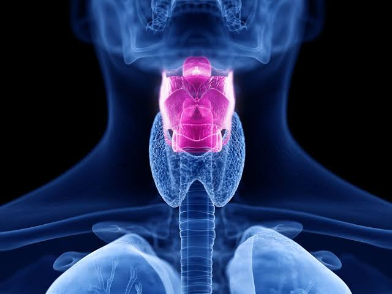
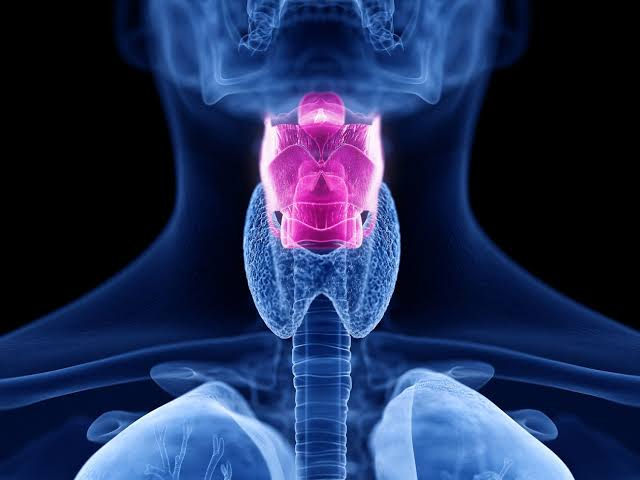

Alat Pernapasan
c. Laring
Laring merupakan pangkal tenggorok yang disusun oleh beberapa tulang rawan yang mem- bentuk jakun. Pangkal tenggorok dilengkapi dengan katup pangkal tenggorok yang disebut epi- glotis. Katup tersebut berfungsi untuk menutup saluran napas pada saat menelan makanan. Pada pangkal tenggorok terdapat selaput suara yang akan bergetar bila ada udara dari paru-paru, mi- salnya pada saat kita berbicara.
Laring

